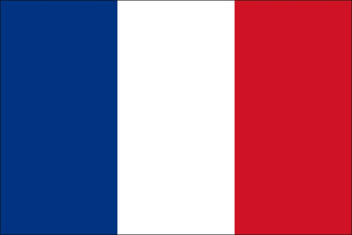
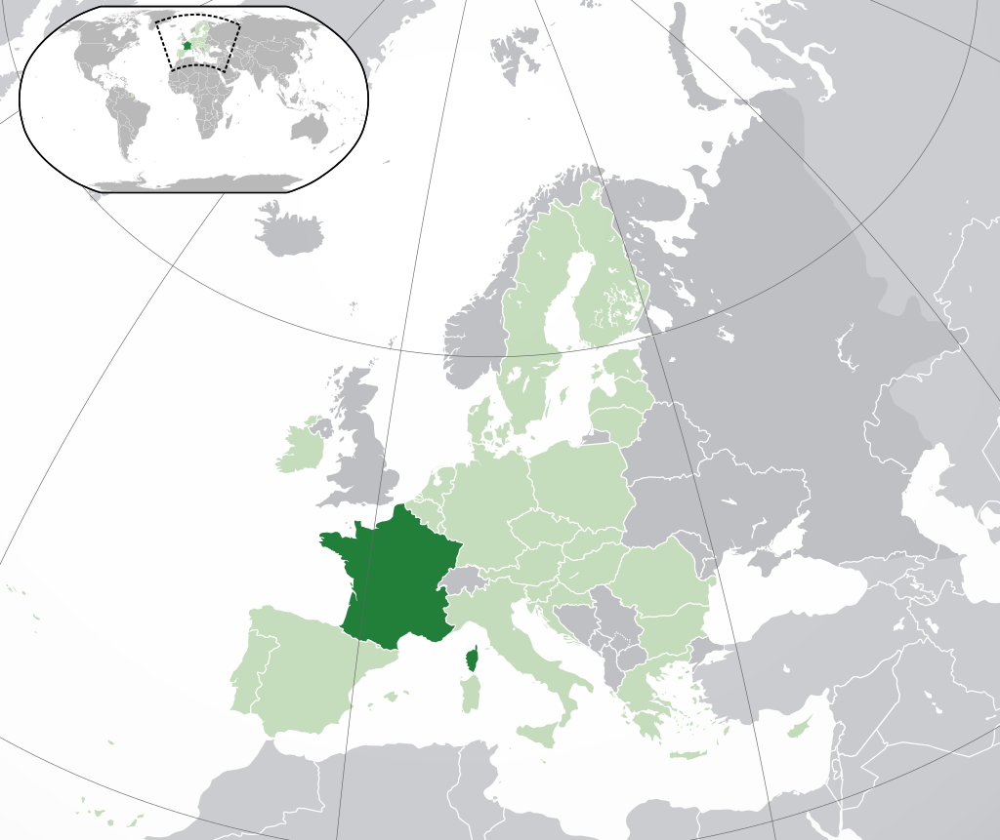
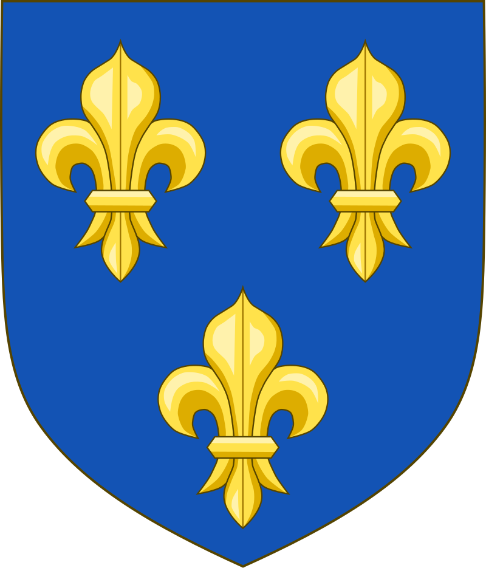
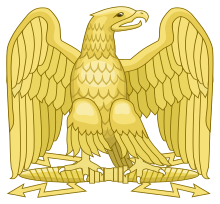
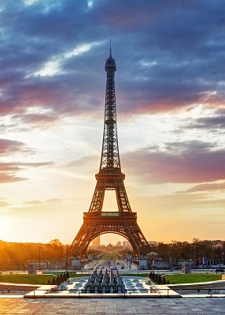

Poloha
Území:
Francie je stát, jehož většina území se nachází v západní Evropě. Francouzskou republiku tvoří i tzv. Zámořská Francie, která zahrnuje území v Karibiku, Severní a Jižní Americe, v Indickém oceánu a Oceánii. K Francii patří také ostrov Korsika.
Sousedé:
Sousedí s Belgií a Lucemburskem na severu, Německem na severovýchodě, Švýcarskem a Itálií na východě a Andorrou, Monakem a Španělskem na jihu.
Metropolitní Francie si kvůli svému tvaru vysloužila přezdívku L'Hexagone.
Francouzská

vlajka
Hymna:
Motto:
Obyvatelstvo
Počet obyvatel:
Francie má 67 milionů obyvatel (65 milionů metropolitní Francie) a je tak čtvrtou nejlidnatější zemí Evropy a druhou nejlidnatější zemí Evropské unie (po Německu).
Náboženství:
Svoboda náboženství je dána ústavou; inspirace pochází z Všeobecné deklarace lidských práv.
- římskokatolické křesťanství: 83–88 %
- islám: 5–10 %
- protestantismus: 2 %
- judaismus: 1 %
Národnostní složení:
Francouzi, Portugalci, Italové, Španělé, aj.
Jazyk:
Francouzština. Dále je používaná němčina a arabština. V zámořských územích existují kreolské jazyky na bázi francouzštiny např. antilská kreolšina.
Hustota zalidnění:
123 obyvatel / km²
Geografie

Poloha Francie
Hlavní město: Paříž
Rozloha: 543 965 km²
Nejvyšší bod: Mont Blanc (4 810 m n. m.)
Poloha: 47° s. š., 2° v. d.Historie
Dějiny Francie začaly zhruba před 1,8 miliony let, kdy se na území Francie objevili první lidé. Od 6. století př. n. l. žili na území Francie Keltové, kteří v následujících letech splynuli s římskou říší v provincii Galii. Během období stěhování národů se zdejší obyvatelstvo smísilo s Germány, kteří tu po pádu římské říše vytvořili své vlastní státy. Na jihu to byla Tolosánská říše Vizigótů, na severu kmeny Franků. Hlavním jazykem této oblasti zůstala latina.
Frankové se ukázali jako nejsilnější germánský kmen a postupně si podmanili všechny ostatní kmeny. Jejich Franská říše se stala nejpevnějším a nejmocnějším státním celkem raného středověku. Po jejím rozpadu se roku 843 z její západní části postupem času začala formovat Francie. Nejprve jí vládli potomci Karla Velikého, roku 987 nastoupila dynastie Kapetovců, která se na trůně se svými vedlejšími větvemi udržela až do vzniku francouzské republiky. postupem času se začala královská moc upevňovat a za Filipa II. Augusta a Filipa IV. Sličného byla již Francie evropskou velmocí.
V 16. století se hlavním francouzským soupeřem stali Habsburkové. Ve druhé polovině 16. století byla Francie uvržena do krutých náboženských válek, které vyvrcholily masakrem, který je známý pod pojmem Bartolomějská noc. Následně za vlády Ludvíka XIV. královská moc dosáhla svého vrcholu a Francie značného rozmachu. Na konci Ludvíkovy vlády došlo k vyčerpání francouzské ekonomiky, což roku 1789 zapříčinilo Velkou francouzskou revoluci, která vedla k nastolení První francouzské republiky.
Republiku brzy ovládl Napoleon a proměnil ji v císařství. Prvních 15 let 19. století bylo pak v celé Evropě zcela pod znamením převahy Francie. Francie začala během 20. století postupně ztrácet své velmocenské postavení. Po druhé světové válce vznikla Čtvrtá republika a v roce 1958 byla nastolena současná Pátá republika v čele s generálem Charlesem de Gaullem.
Erby

Erb králů

Erb císařství
Turismus
Eiffelova věž:
Ocelová věž pocházející z 19. století. Z počátku se stavba řadě umělců a slavných lidí nelíbila, ale postupem času se „Eiffelovka“ stala symbolem města. Věž je vysoká 324 metrů a ve své době byla nejvyšší stavbou na světě.
Zámek ve Versailles:
Stavba ze 17. stol., která je symbolem moci absolustické monarchie a sídlo francouzských králů. Patří na seznam světového dědictví UNESCO.
Katedrála Notre Dame:
Nejnavštěvovanější památka a největší katedrála v Paříži. Stavba začali již ve 12. stol. a byla dokončena až ve 14. stol.
Muzeum Louvre:
Patří mezi největší muzea na světě. Je součástí palácového komplexu Palais de Louvre. Můžete zde obdivovat přes 35 000 vystavovaných exponátů např. obraz Mona Lisy autora Leonarda da Vinciho.
Disneyland:
Zábavný park Disneyland a studia Walta Disneye jsou místy, které návštěvníkům poskytnou nezapomenutelný zážitek. V parku můžete navštívit spustu atrakcí. Každá budova nebo postava zde připomíná objekty ze známých kreslených seriálů.
Nejznámější památka

Eiffelova věž